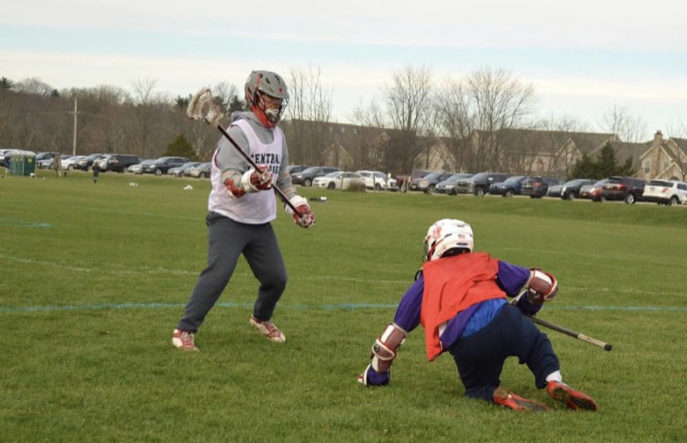

Hello my name is Matt Groel and I am a 22 year old Senior Information Technology student at Kean University. I was born August 12, 1999 and have lived in Whitehouse Station, NJ my whole life. I grew up skateboarding, playing lacrosse, and playing video games. I enjoy sustainability and learning how we can make our processes more efficient and produce less waste.
